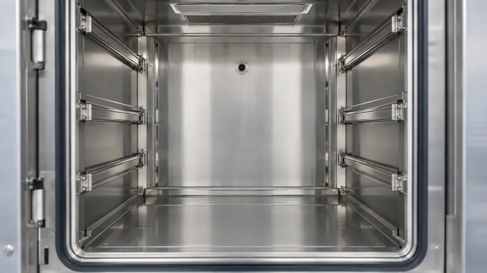

Revalidering, der holder hospitalssterilisation compliant.
Autoklaver og instrumentvaskemaskiner driver over tid. Vi revaliderer dem efter FSTA's nationale retningslinjer, på en fast årlig aftale, med sporbare rapporter jeres kvalitetssystem kan forsvare.

Sterilisatorer driver. Akkreditering tilgiver det ikke.
Ydeevnen falder langsomt og usynligt. Uden planlagt revalidering opdages afvigelsen først, når det er for sent.
“… uafhængigt af om revalidering foretages af hospitalets/regionens tekniske afdeling eller af ekstern leverandør.”
FSTA, National vejledende retningslinje for revalidering af store dampautoklaver, januar 2019Retningslinjen er skrevet, så resultatet er det samme, uanset hvem der udfører arbejdet. Det er præcis den opgave, vi løser.
Det skal gøres hver 12. måned
Retningslinjerne kræver revalidering hver 12. måned, og igen efter service eller reparation, der påvirker kritiske procesparametre.
Det er ikke harmoniseret endnu
Indkøb, validering, service og revalidering har ikke været ensartet i Danmark. FSTA-retningslinjerne er svaret, og de er detaljerede. 16 testplaner for autoklaver, 17 for instrumentvaskemaskiner.
En egen afdeling er dyr at holde i live
Det kræver kalibreret referenceudstyr, dokumenteret testpersonale og rutine. De fleste sterilcentraler har hverken tid eller bemanding til det ved siden af driften.
Den fulde, tilbagevendende compliance-pakke.
Udstyrsrekvalificering og instrumentkalibrering samlet ét sted, med sporbar dokumentation for hvert besøg.
- Store dampautoklaver (≥ 1 STE). FSTA's nationale retningslinje, januar 2019. 16 testplaner. DS/EN 285, DS/EN ISO 17665.
- Instrumentvaskemaskiner. FSTA's reviderede nationale retningslinje, 24. november 2022. 17 testplaner. DS/EN ISO 15883-1 og -2.
- Lavtemperatur-sterilisatorer. DS/EN ISO 14937. Der findes endnu ingen national FSTA-protokol for denne udstyrstype.
- Vandkvalitet og pH (Testplan 4). Få måler det. Vandet er ofte den egentlige årsag, når rengøringsresultatet skrider.
- Temperatur i tørrezonen, ud over selve rengørings- og desinfektionsfaserne.
- Proceskemirester og kalibrering af kemidoseringssystemet (Testplan 5 og 6).
- Afvigelser føres på afvigelsesblad med nummer, rationale og korrigerende handling, og lukkes før rapporten afleveres.
Revalidering som en aftale, ikke en engangsopgave.
Fire trin, der binder revalideringen til jeres akkrediteringscyklus, år efter år.
Planlægning
Vi kortlægger hver enhed og lægger en kalender efter jeres akkrediteringscyklus.
Forberedelse, Del I
Kompetencedokumentation for testpersonale, godkendt årligt eftersyn, reference- og testudstyr, vandkvalitet, kemirester, kalibrering.
Praktisk test, Del II
Termometrisk kontrol på last, rengøringstest på reference- og anvendte instrumenter, postverificering af følere. Vi medbringer to sæt måleudstyr, så en enhed kun er ude af drift til sin egen test.
Rapport, Del III
En revalideringsrapport, der konkluderer på maskinens validerede tilstand, godkendt af den kvalitetsansvarlige. Gentages årligt. Pris aftalt på forhånd.
Vi laver ikke den første installationsvalidering.
Den hører til leverandøren af udstyret. Vi laver den periodiske revalidering bagefter, år efter år. Det er hele vores opgave, og derfor er vi gode til den.
Navngivne specialister, ikke et CV-kartotek.
Du ved præcis, hvem der kommer, før nogen sætter fod i jeres facilitet.

Morten Winsløw
30+ års teknisk erfaring og 7+ års praktisk IQ-, OQ- og PQ-arbejde på Belimed-, Steelco- og Miele-anlæg, inkl. fuldautomatiske sterilcentraler med robotter og AGV'er.

Peter Mastrup
Specialist i vask og sterilisation med 20+ års erfaring inden for vaskemaskiner, autoklaver og CIP/SIP. Har stået for layouttilpasning og teknisk kravspecifikation for store pharmaproducenter.
Arbejder efter FSTA's nationale retningslinjer for revalidering af store dampautoklaver og instrumentvaskemaskiner, EN 285 og DS/EN ISO 15883.

Valeria Meloni
CQV-ingeniør og specialist i miljømonitorering. Har været både Engineering Responsible og Operational Responsible på en større API-udvidelse og skriver valideringsdokumentation, der kan holde til et inspektionsbesøg.
IQ-, OQ- og PQ-protokoller, contamination control strategy, HVAC-rekvalificering.

Raquel Petersen
Projektleder med praktisk erfaring fra GMP-regulerede pharmamiljøer. Har ledet tekniske pakker, leverandørkoordinering og valideringsaktiviteter, og driver dokumentation, change control og tværfaglig koordinering.
Projektledelse, vask og sterilisation, IQ-, OQ- og PQ, FAT/SAT, change control, GMP.
Et etableret team uden udstyr at sælge.
Vi rådgiver ud fra compliance, ikke ud fra hvad vi kan sælge jer af udstyr.
Uafhængige af producenten
Vi sælger ikke steriliseringsudstyr. Vores eneste opgave på stedet er at bekræfte, at jeres enheder yder efter specifikationen.
Fast, forudsigelig pris
Pris pr. enhed med årsaftale. Omkostningen er synlig, før arbejdet går i gang.
Erfaring fra regulerede anlæg
Vi leverer til daglig på nogle af Europas mest compliance-intensive GMP-anlæg.
Book en gratis vurdering.
En samtale på 30 minutter og en revalideringsvurdering på én side inden for 48 timer. Uden omkostning, uden forpligtelse.
Ofte stillede spørgsmål.
Hvor ofte skal udstyret revalideres?
Hver 12. måned, og igen efter service, reparation eller flytning, der kan påvirke kritiske procesparametre. Omfanget efter et indgreb fastlægges ud fra en risikovurdering.
Hvilke standarder arbejder I efter?
FSTA's nationale retningslinjer for store dampautoklaver og instrumentvaskemaskiner, DS/EN 285, DS/EN ISO 17665, DS/EN ISO 15883-1 og -2, samt DS/EN ISO 14937 for lavtemperatur.
Arbejder I på alle fabrikater?
Ja. Vi er uafhængige af producenten og sælger ikke udstyr, så vores eneste opgave på stedet er at bekræfte, at jeres enheder yder efter specifikationen.
Hvad omfatter en revalidering?
Forberedelse (Del I), praktiske test på stedet (Del II) og en revalideringsrapport, der konkluderer på maskinens validerede tilstand (Del III), efter testplanerne i den nationale retningslinje.
Hvad hvis vi ikke vil køre alle testplaner?
Så skal rationalet beskrives i afdelingens kvalitetsstyringssystem ud fra en risikovurdering. Uden en fuld revalidering kan maskinen ikke erklæres fuldt valideret med henvisning til standarden. Vi hjælper med at afgrænse det korrekt.
Hvor meget nedetid skal vi regne med?
Besøg planlægges omkring jeres operations- og sterilcentralbelastning. Vi medbringer to sæt måleudstyr, så en enhed kun er ude af drift til sin egen test.